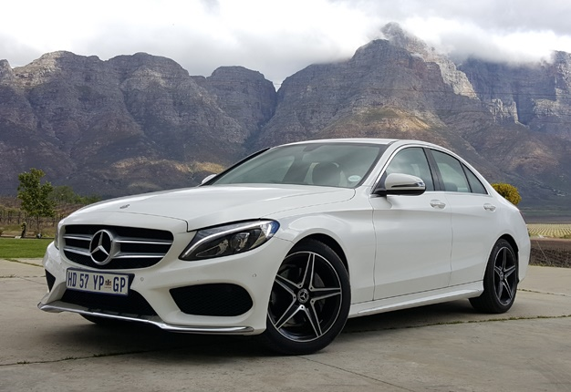
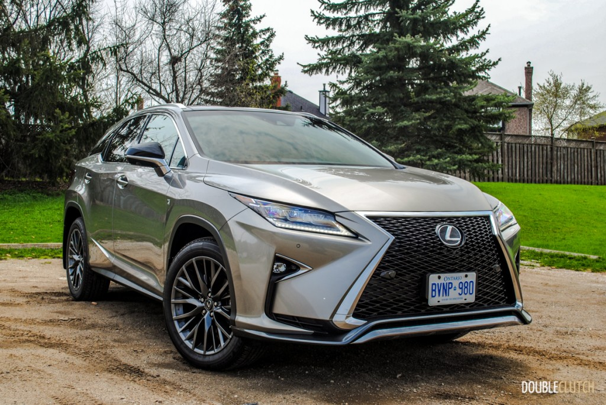

Mercedes C 180 |
| 
more images |
The Mercedes-Benz C-Class is a line of compact executive cars produced by Daimler AG. Introduced in 1993 as a replacement for the 190 (W201) range, the C-Class was the smallest model in the marque's line-up until the W168 A-Class arrived in 1997. The C-Class is built at Mercedes-Benz factories in Sindelfingen and Bremen, Germany as well as numerous satellite factories in other countries. The first C-Class (W202) sedan was produced on 1 June 1993 and the first second generation (W203) rolled off the assembly line on 18 July 2000. The C-Class has been available with a 4MATIC (i.e., four-wheel drive) option since 2002. The third generation (W204) was launched in 2007 while the latest generation C-Class (W205) came out in 2014. |
Lexus RX series |
| 
more images |
The Lexus RX (Japanese: レクサス・RX, Rekusasu RX) is a mid-size luxury crossover SUV sold since 1998 by Lexus, a luxury division of Toyota. Originally released in its home market of Japan in late 1997 as the Toyota Harrier, export sales began in March 1998 as the Lexus RX.[1] Four generations of the Lexus RX have been produced to date, the first being compact in size, and the latter three classified as mid-size. Both front- and four-wheel drive configurations have been used on the RX series, and several gasoline powertrain options, including V6 engines and hybrid systems, have been offered. In the Lexus model lineup, the RX sits below the larger GX and LX (Known as the Toyota Land Cruiser Prado and the Toyota Land Cruiser body-on-frame SUVs outside North America, and above the smaller NX crossover with a lesser displacement inline-four engine. The name "RX" stands for "Radiant Crossover".[2] It has also been labelled as "Recreational Cross Country" in some markets.[3] The RX's current Toyota counterparts are the Highlander/Kluger; past counterparts were the Harrier and Venza. |